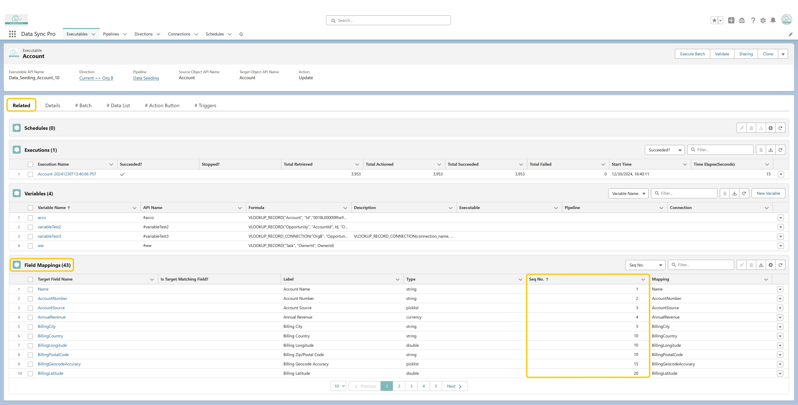

To control the order in which target fields are evaluated during Mapping:
📌 When Seq No. is specified, DSP evaluates field mappings in that order. If the source and target are the same record, transformations are accumulative—meaning the result of a previously evaluated field can be used in subsequent transformations. This is useful when one field’s output depends on another’s value.
